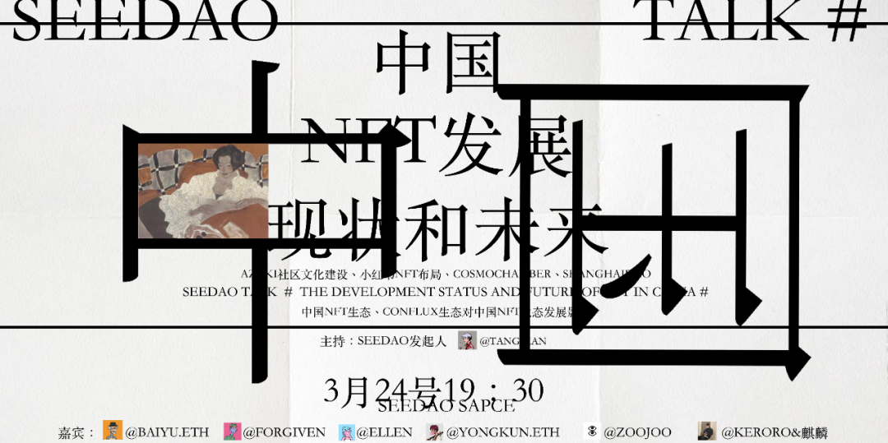

| 海拔：kiko 文案：北林🌸 中国NFT发展的现状和未来 Open Talk3月24日19：30🗣 SeeDAO邀请到了七位在国内积极探索中文社区建设与NFT布局的嘉宾： @Diana19959295 @baiyu2140 @forgivenever @0xEllen @yongkunnn @zoojoo_art @Keroro_Lisa👍🏻 围绕中国NFT生态、国内NFT布局及conflux生态展开探讨